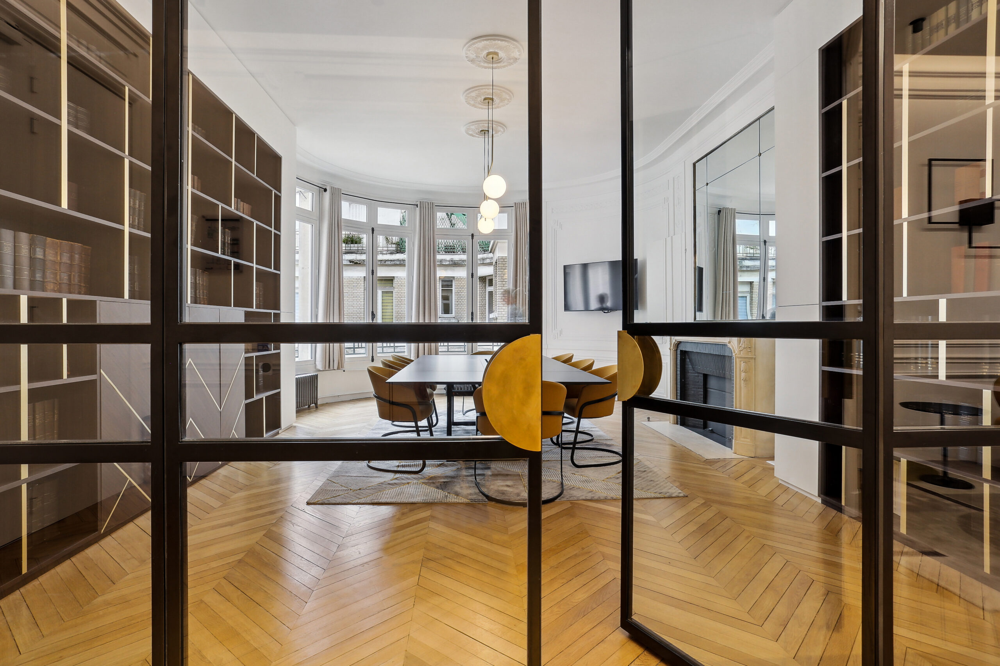

Notre Histoire
Fondé à Paris en 2010, le Cabinet Auguste est né de la volonté d’accompagner les entreprises et leurs dirigeants dans un environnement juridique complexe et en constante évolution.
Notre Philosophie
Nous croyons en une approche sur-mesure, confidentielle et rigoureuse. Chaque dossier est traité avec exigence et humanité, pour vous offrir un accompagnement stratégique à forte valeur ajoutée.
Le Cabinet en images
